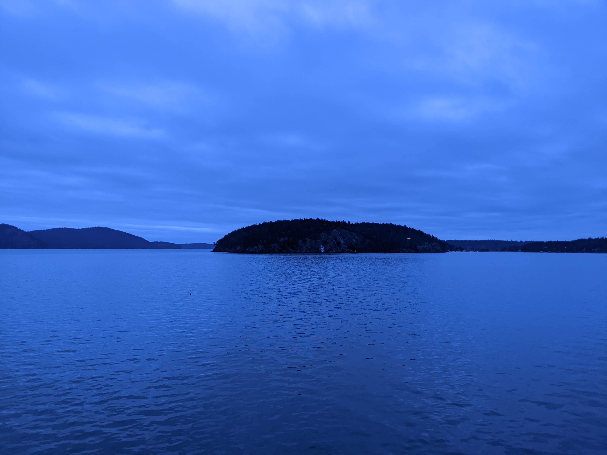
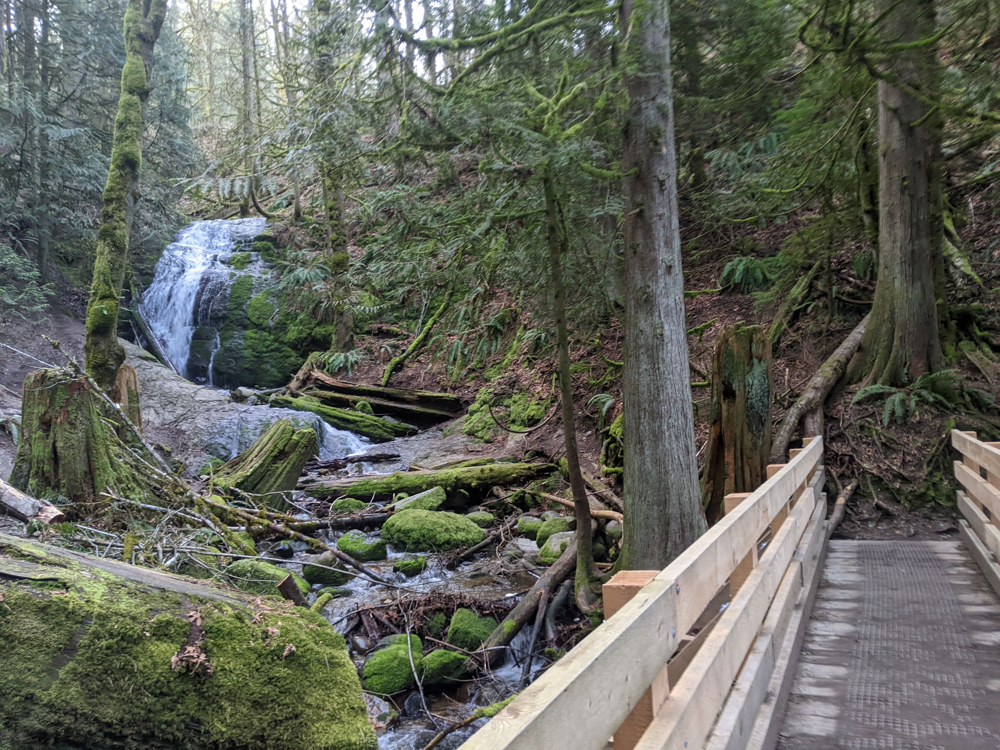
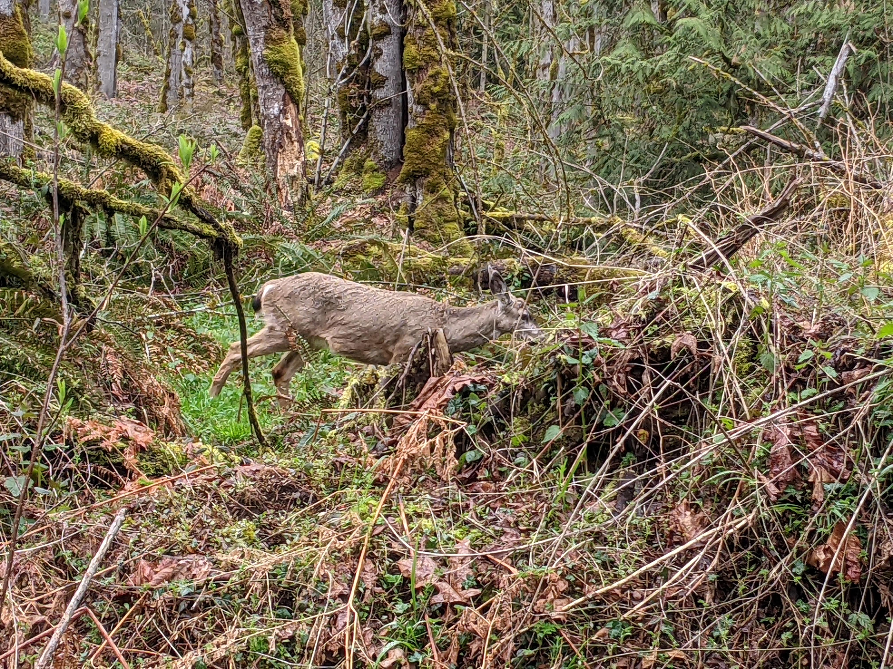
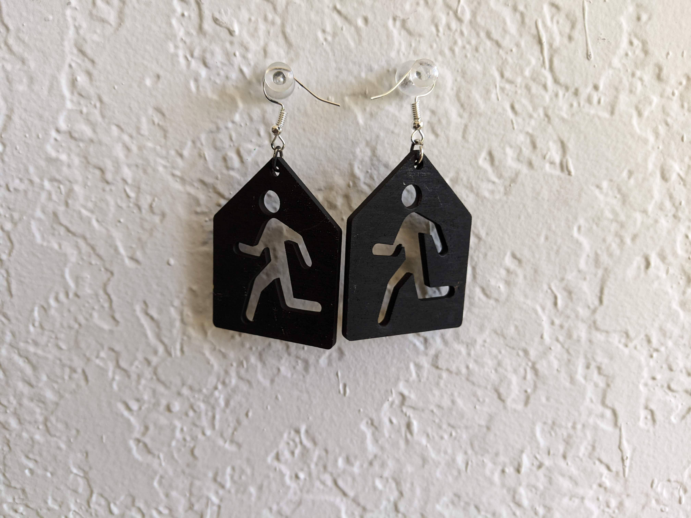
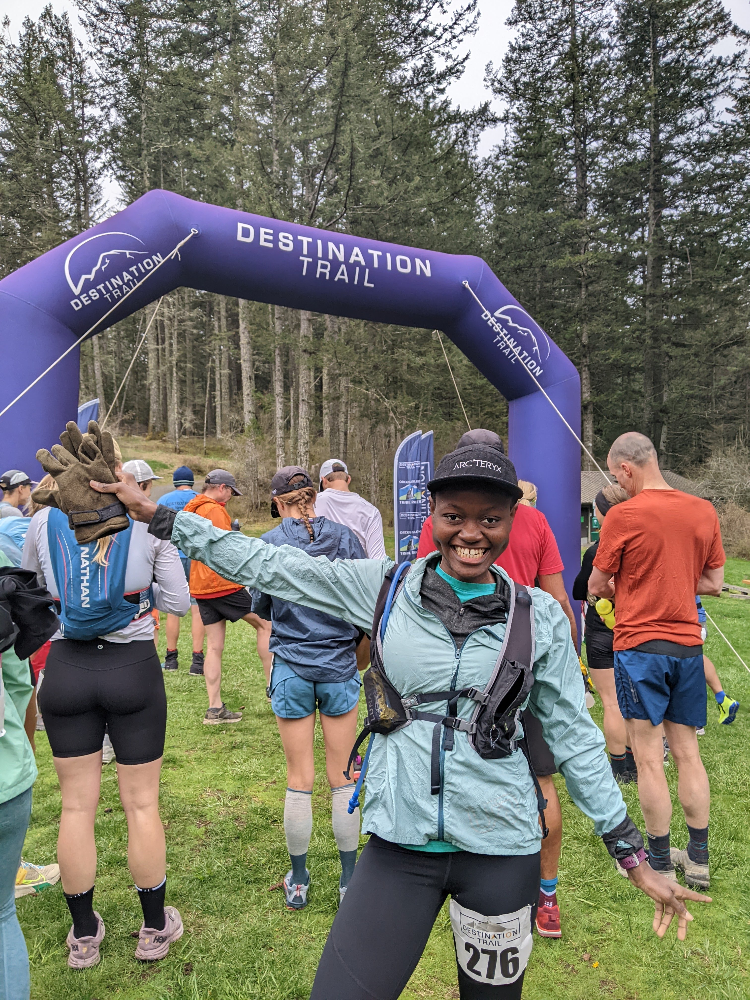

Its been a while since I wrote about running, lets change that. A few months ago, I was running through never-ending flares, jumping from one medical appointment to the next and crying my way to acceptance. You know, typical rock-bottom, end of the world vibes. Four months later I’m happy to report that the world infact did not end, life moved and I’m still here.
Lets recap, I spent a good chunk of last year finding and pushing my limits, averaging one ultra a month, with crazy adventures sprinkled in between. It was all fun and games until I was diagnosed with Rheumatoid Arthritis (RA), a chronic disease characterized by fatigue, joints inflammation and flares; a fancy word for prolonged chronic pain whose consequences range anywhere from minor inconvenience to existential crisis. I was on the existential end.
I wasn’t ready to give up running (and I hope I won’t have to) but something had to give. What I did give up were the accessories, not running gear but everything else that came secondary. At the core, my reasons for running are very simple: good health, good sleep and endorphins. Training, racing, social-media and generally centering my life around running was far from essential. Those can be subjectively good things but at the time they were not serving me well. It was time to listen to my body rather than push it. So while I have been running almost the same mileage, I haven’t been talking about it or racing as much. Instead of races I’ve been doing fun social runs for experiment rather than training. Basically, I’ve been aimlessly running with no goal except get stronger without agitating my joints. Save for a few fingers and toe joints, I feel much better now; thanks to my awesome rheumatologist who made it a priority that I don’t give up running. In a weird twist of fate, this down time has only made me stronger and faster.
While hibernating, I’ve had a lot of time to reflect, think and adapt. I’d like to share some lessons that stuck.
- No human is limited but …
The premise of ultra running is finding out the farthest you can go. We know that Pheidippides dropped dead after running over 350 miles in less than a week, world records are being broken everyday and races just keep getting longer and longer. Just when you wrap your head around 100 mile races, 200+ mile race become the norm. It makes you wonder, where does it all end? I used to envy people who can go further and faster than me but now I feel different. I’m happy for them but not exactly envious; With or without RA, my ceiling looks very different from theirs and we experience the same joy from pushing that ceiling a little higher.
- Running is great but …

The benefits of running are endless but it is not the end be all. I feel the need to say this because there was a time I relied on running to fix everything. Although an extra mile or two would improve my Strava stats, they were at best a distraction from everything I was trying to ignore. Truth is, you can convince yourself you ’need’ to run all the miles in the world and you probably will, but eventually the run will end and the music will stop. That’s when the real ultra begins. It helps when to have a healthy relationship with running; when running is not the final destination but is in service of the bigger picture; a fulfilled life. I’m working on it.
- Strava is a great app but …
There are many arguments about Strava being good for motivation and healthy lifestyle. That’s true but like any other social media app, it comes with social media stuff. Stuff like out of context comparison, unhealthy competition, distraction and exclusion, sometimes these triggers come minutes apart. This is no fault of Strava per se, but the human condition; these issues will follow whatever medium we use for sharing best versions of our lives. That said, I still use Strava, but at a distance as a webapp that I go to intentionally to support my friends.
- The real prizes are the friends we made along the way.

Its true, community is everything. To be clear, by friends I mean humans you interact with in real life and not social media fans. Running is an individual sport and its easy to think you can make it alone. You probably can but the experience will be so much better with friends. I too have fallen into this trap because self-sufficiency is in my DNA. What has helped me is realizing how selfish it is to keep my wins and struggles to myself. I wouldn’t be here if I didn’t know of other athletes with RA, I have inspired and helped friends achieve their goals which felt as good as achieving my own. I share my journey, because if anything, it makes non-negative contribution to the world and that’s good enough for me.
- There is more to life than running.

This is pretty obvious but its something every Type-A runner needs to hear from time to time. Its easy to get caught up in the cycle of training and racing that we forget they don’t matter in the grand scheme of things and we can still be fulfilled without running. That’s exactly where my mind was when there was a chance running would be out of the picture forever. I had to step out of the bubble and find joy in other places, I found it relationships, crafting (shameless plug for my soon to lauch business) and chilling more. As I said, the world did not end and I’m still here, wiser and stronger.
That is it, my 5 cents. Thanks for making it all the way here. I hope you learnt/related with a thing or two.
That said, What’s next for me? I honestly don’t know, I’ve learnt to work with whatever signals I get from my joints. I just completed my first ultra (accidentally and without tapering) and felt really good. I might just be able to squeeze one last race for the year, an epic race for my birthday, if not, that’s fine too! What I do know is this year there will be less racing, more volunteering, adventures and living in the moment. I look forward sharing this journey with you.
